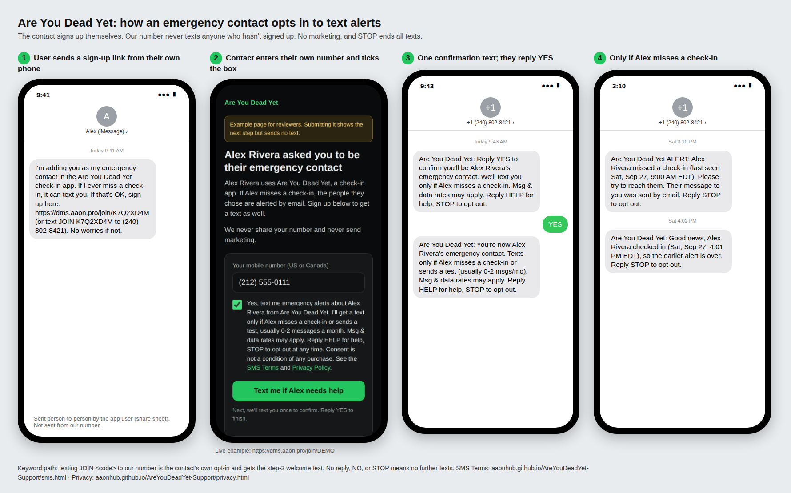

Effective date: September 27, 2026
Are You Dead Yet text alerts are safety texts for the emergency contacts of people who use the Are You Dead Yet check-in app (also shown as "Dead Man's Switch"). An app user checks in on a schedule. If they miss a check-in, the contacts who signed up for texts get an alert, and a follow-up when the user checks in again. The app user can also send a test text. We never send marketing or promotional texts.
Only the person who will get the texts can sign up. An app user can't sign you up.

Screenshots of the opt-in flow. The sign-up page shown is the live example page.
Message frequency varies. You'll get a text only if the person misses a check-in, when they check in again after an alert, or if they send you a test. That is usually 0 to 2 messages a month. Message and data rates may apply.
We do not sell, rent, or share mobile numbers or SMS opt-in data with third parties for marketing. See our Privacy Policy.
Are You Dead Yet (independent developer Aaron Jin): areyoudeadyetapp@gmail.com